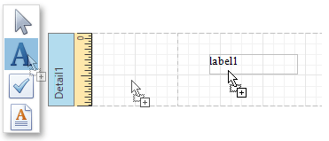
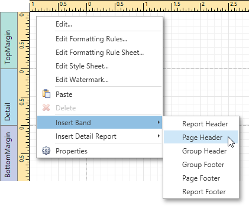
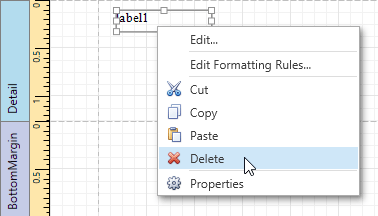

Create and Delete Report Elements
This document describes how to add and delete report controls and bands in the Report Designer.
The topic consists of the following sections.
Creating Report Controls
All available controls are listed in the Control Toolbox. To add a control to the currently opened report, you can drag and drop it onto an appropriate report band.

Report controls of appropriate types are created automatically, after you drag items from the Field List and drop them onto the report surface.

Creating Report Bands
To add a new band of a particular type, use the context menu of the report or bands. Right-click a report on the design surface or in the Report Explorer, and select a band to be inserted in the report.

Deleting Controls and Bands
To delete a report control or band, select it on the design surface or Report Explorer, and then do one of the following.
Press the DELETE key.
Right-click the report element, and in the invoked context menu, select Delete.

Click the Delete
 button on the Toolbar.
button on the Toolbar.
Note that certain elements cannot be deleted (such as the Detail band).